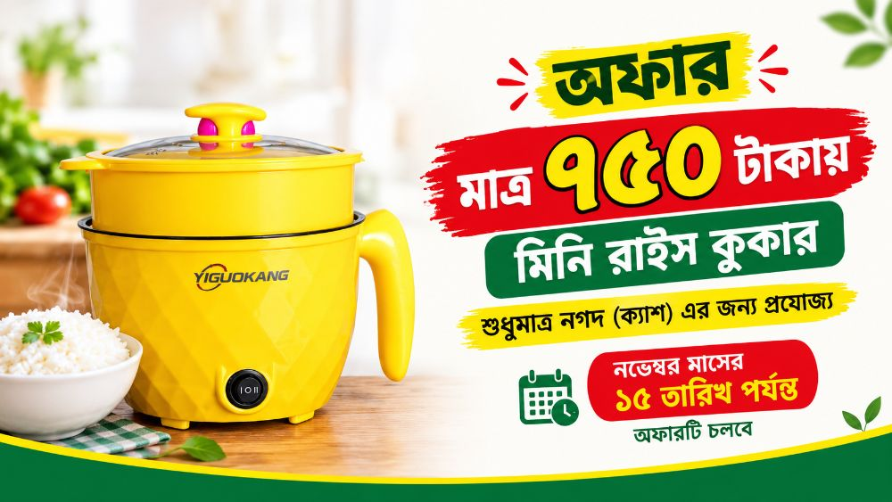
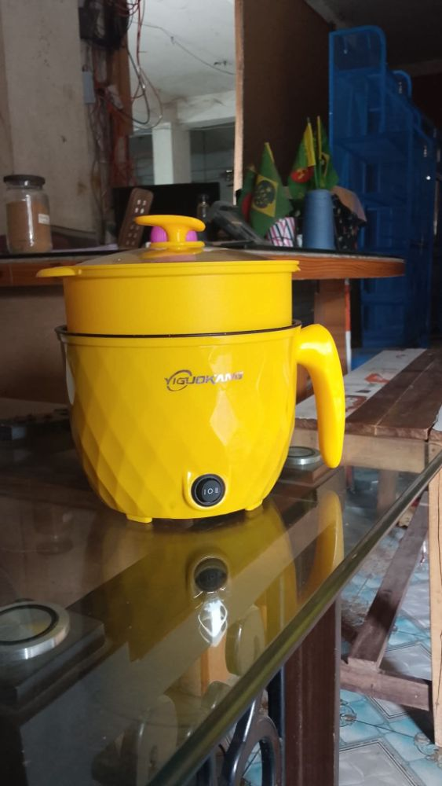

মাল্টিফাংশনাল মিনি ইলেকট্রিক রাইস ও হট পট কুকার
আপনার দৈনন্দিন রান্নাবান্নাকে আরও সহজ ও আনন্দদায়ক করতে নিয়ে এলাম YIGUOKANG মিনি ইলেকট্রিক রাইস কুকার! ছোট পরিবার, ব্যাচেলর, হোস্টেল বা ট্র্যাভেলিংয়ের জন্য এটি অত্যন্ত দরকারী একটি গেজেট।
✨ মূল বৈশিষ্ট্যসমূহ:
আকর্ষণীয় ডিজাইন: চমৎকার ডায়মন্ড কাট টেক্সচার ও উজ্জ্বল হলুদ রঙের বডি, যা আপনার কিচেনের সৌন্দর্য বাড়িয়ে দেবে।
অল-ইন-ওয়ান ব্যবহার: এতে খুব সহজেই ভাত রান্না, ডিম সিদ্ধ, নুডুলস, সুপ, স্টিম (ভাপে রান্না) এবং হালকা ভাজাপোড়ার কাজ করা যায়।
স্টিমার ট্রে সংযুক্ত: কুকারের উপরে একটি অতিরিক্ত স্টিমার ট্রে রয়েছে, যার ফলে নিচে ভাত বা সুপ রান্নার পাশাপাশি উপরে সবজি বা ডিম সেদ্ধ করতে পারবেন।
সহজ পাওয়ার কন্ট্রোল: এতে হিট কন্ট্রোলের জন্য ২-ধাপের পাওয়ার সুইচ রয়েছে (I এবং II), যা দিয়ে রান্নার তাপ প্রয়োজন অনুযায়ী সহজেই অ্যাডজাস্ট করা যায়।
গ্লাস লিড (কাঁচের ঢাকনা): রান্নার অবস্থা বাইরে থেকেই সহজে দেখার জন্য এতে রয়েছে মজবুত ট্রান্সপারেন্ট কাঁচের ঢাকনা।
পোর্টেবল ও আরামদায়ক হ্যান্ডেল: মজবুত হ্যান্ডেল থাকার কারণে এটি সহজে বহন করা যায় এবং ব্যবহারের সময় হাত পুড়ে যাওয়ার ভয় থাকে না। 📦 প্যাকেজে যা যা থাকছে:
মাল্টিফাংশনাল মিনি রাইস কুকার
স্টিমার ট্রে
ট্রান্সপারেন্ট কাঁচের ঢাকনা
পাওয়ার ক্যাবল
💡 কেন কিনবেন?
খুবই কম সময়ে, কম বিদ্যুৎ খরচে এবং ঝামেলা ছাড়া ঝটপট যে কোনো খাবার তৈরির জন্য এটি একটি অসাধারণ সমাধান!
Mini Rice cooker এর দাম বাংলাদেশে ৳ 750। Mini Rice cooker price in Bangladesh ৳ 750. অরগেট এন্টারপ্রাইজ-এ ক্যাশ ও কিস্তিতে পাওয়া যায়।